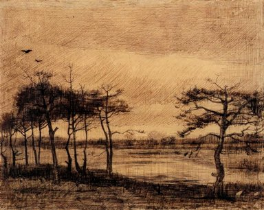
Sample 00
human: noanimal: yesflower: no
No humans are visible; two birds (animals) appear in the top-left sky area; no flowers are present in the scene.
Schema-guided OpenRouter classification for 20 WikiArt samples. Model: nvidia/nemotron-3-nano-omni-30b-a3b-reasoning:free

No humans are visible; two birds (animals) appear in the top-left sky area; no flowers are present in the scene.
A human figure is visible in the lower center foreground and an angelic human in the upper left, animals are present in the lower right, and no flowers are visible.
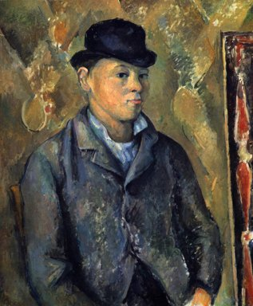
The artwork shows a human subject in the center foreground, while no animals or flowers are visible in the image.
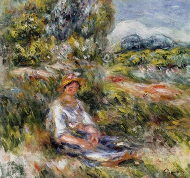
A person is visible in the center foreground, but there are no animals or clearly identifiable flowers in the image.
Humans are visible in the foreground on the shore and in the small boat; no animals or flowers are present in the scene.
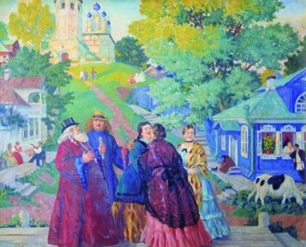
Humans are visible in the foreground group and background, an animal (cow) is in the lower-right, and no flowers are clearly visible.
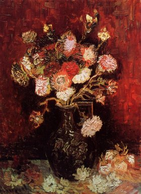
The painting shows a vase of flowers with no humans or animals visible.
No humans are visible in the scene, but animals (sheep) are present in the lower right foreground and elsewhere, while no flowers can be seen in the landscape.
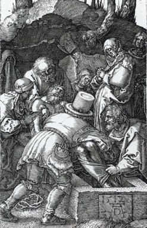
The image contains multiple human figures (e.g., central figure in armor, others around), but no animals or flowers are visible.
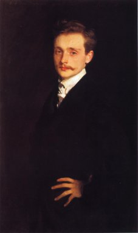
The image shows a person in the center foreground, with no animals or flowers visible.
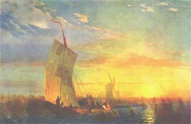
A human/person is visible in the foreground on the boat. No animal is visible in the scene. No flower is visible in the artwork.
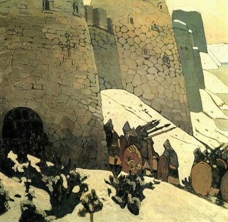
Humans are visible as figures near the castle walls in the lower-middle and right areas; no animals or flowers are clearly identifiable in the scene.
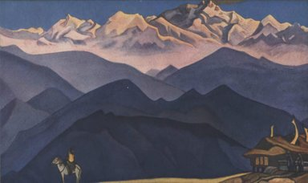
A person is visible riding a horse in the lower-left foreground, and the horse is an animal, but there are no flowers present.
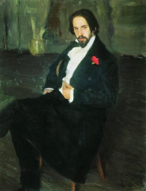
The image shows a seated man (human) with a red flower on his lapel, and no animals are visible.
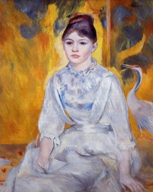
A woman (human) is centered in the foreground, a bird (animal) is in the background right, and no flowers are visible.
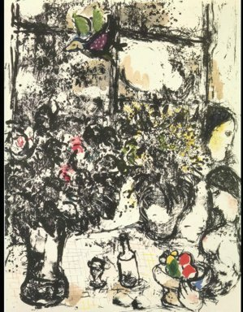
A human figure is visible in the lower-right, a bird is in the top-left, and flowers are in the center-left.
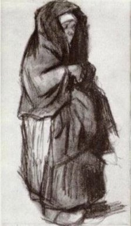
The image shows a human figure in the center, confirming has_human as yes, while no animals or flowers are visible, so has_animal and has_flower are no.
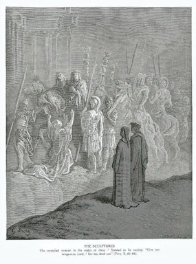
The image contains multiple human figures (e.g., two in the foreground, others in the background), but no visible animals or flowers.
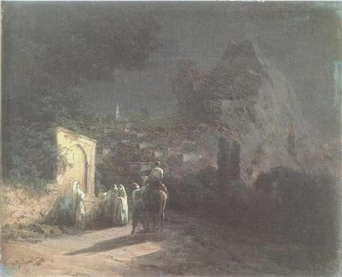
Humans are visible near the arch and on the horse in the foreground; an animal (horse) is present with a rider; no flowers are visible in the scene.
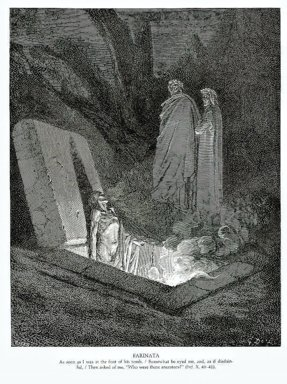
Two standing figures and one in the tomb are humans (center/right), no animals or flowers are visible.